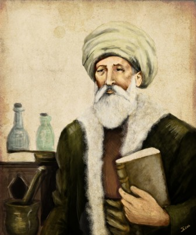

Türk Kültürü & Bilim Öncüleri
🕌 Akşemsettin ve Manevi Miras
Fatih Sultan Mehmet’in hocası, hekim, mutasavvıf ve mikrobiyolojinin öncüsü bilge şahsiyeti tanıyalım!
02:14 / 04:45
1
Mikrop Kaşifi
2
Fatih'e Öğüt
3
Eyüp Sultan
4
Şifacı Hekim
Maddetü'l-Hayât İncelemesi
Mercek odaklandı: Tohum parçacıklarına dokunun!
Miras Muhafızı Başarısı
Tebrikler Genç Bilge!
Akşemsettin Hazretleri'nin tıp, maneviyat, ilim ve fetih yolundaki kutlu mirasını başarıyla öğrendin.
"Hastalıklar insandan insana gözle görülmeyecek kadar küçük tohumlar vasıtasıyla geçer..."
— Maddetü'l-Hayât, Akşemsettin
— Maddetü'l-Hayât, Akşemsettin
Öğrendiklerimiz:
Haritaya Dön
- 🔬 Mikrobiyolojinin ilk temellerini attı.
- 👑 Fatih Sultan Mehmed'in hocası ve fethin manevi mimarı oldu.
- 🕌 Eyüp Sultan (Ebu Eyyûb el-Ensârî) kabrini keşfetti.
- 🌿 Tabib-ül-Ervah olarak Göynük'te ebedi istirahatgahında yatmaktadır.